Cars
Everyday to premium
From compact hatchbacks to larger saloons, discuss a tinting option that complements your vehicle.
Automotive window tinting · Gibraltar
Give your vehicle a sharper look with professionally installed window film. Straightforward advice, careful fitting and a finish tailored to you.
Send your vehicle details and a photo to get started.
Options to suit your windows and the look you want.
Preparation, fitting and attention to the finish.
A direct conversation with us on WhatsApp.
Our services
Professional automotive window tinting, with advice on the shade and windows that suit your requirements.
From compact hatchbacks to larger saloons, discuss a tinting option that complements your vehicle.
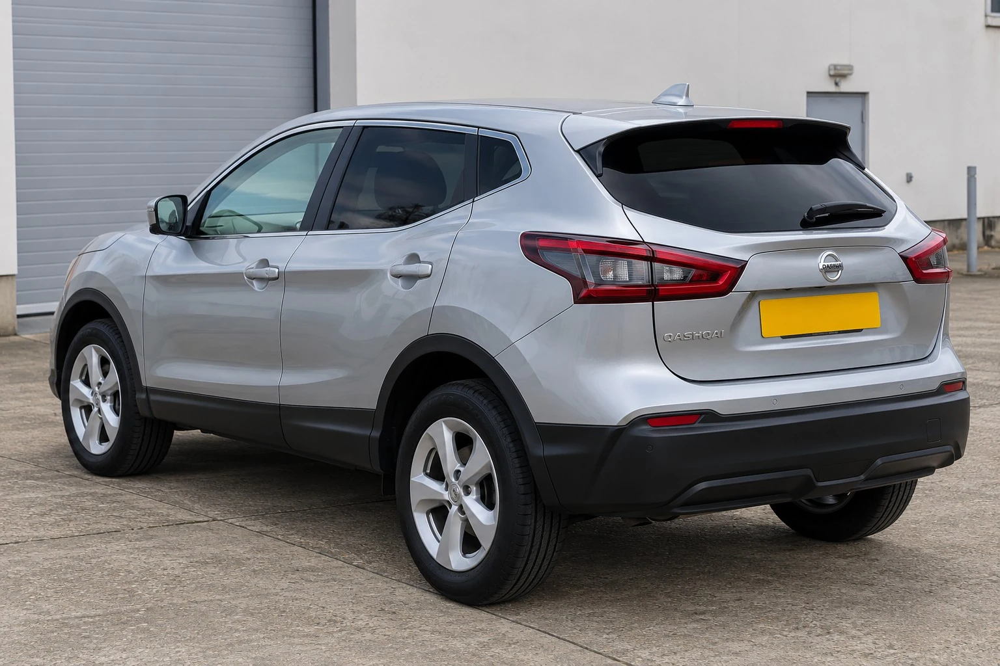
Talk to us about your existing glass, preferred shade and the windows you would like tinted.
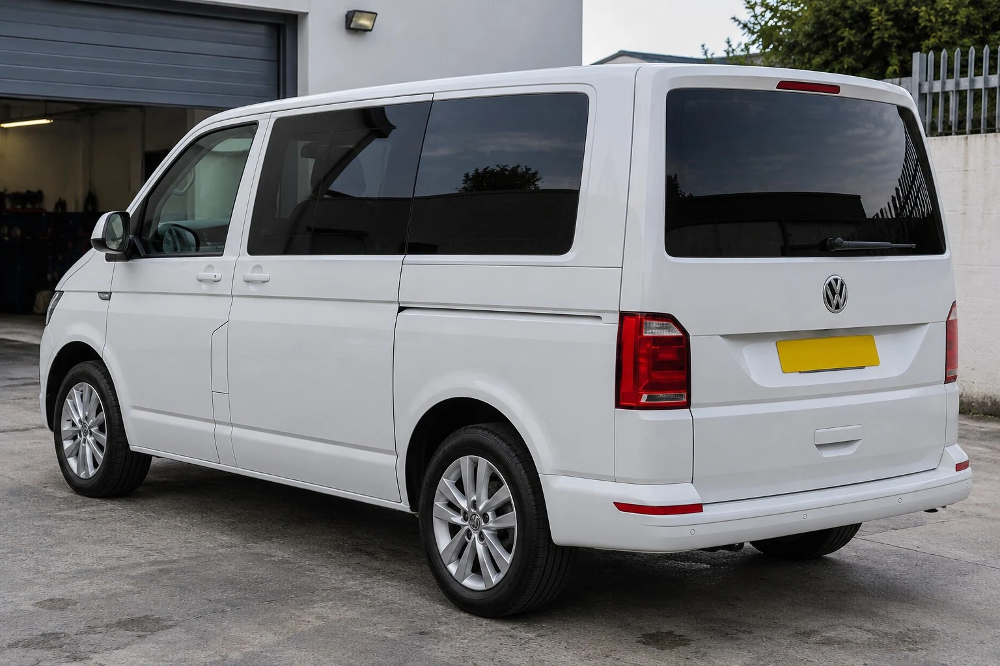
Send a photo of your van and its glazed windows so we can discuss the job and prepare a quotation.
Not sure which option to choose? Send us your vehicle details and we’ll talk it through.
Ask us on WhatsAppThe gallery
Explore different vehicle styles and the details of window-film preparation and fitting. Tap any image to view it in full.
20 images
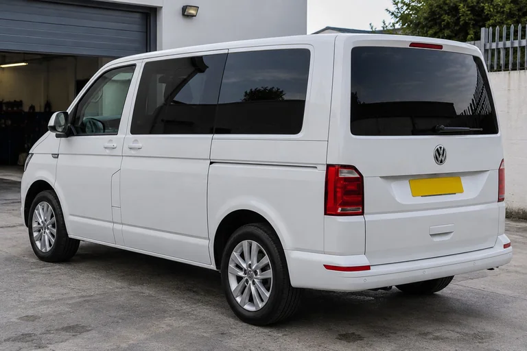
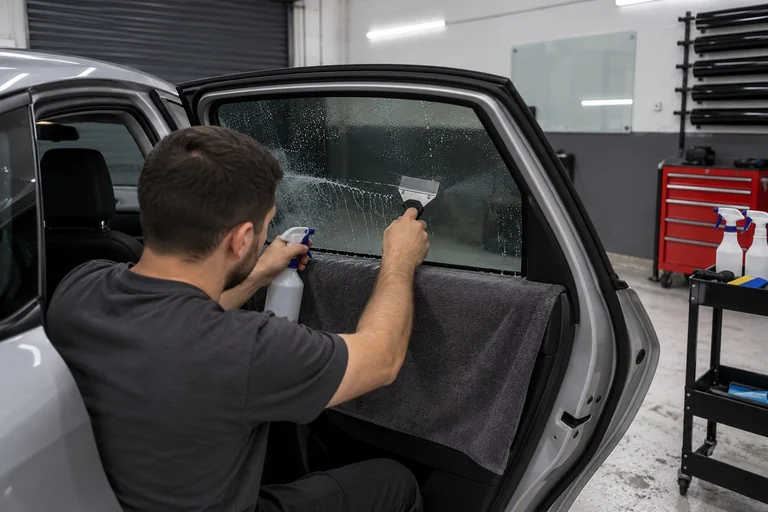
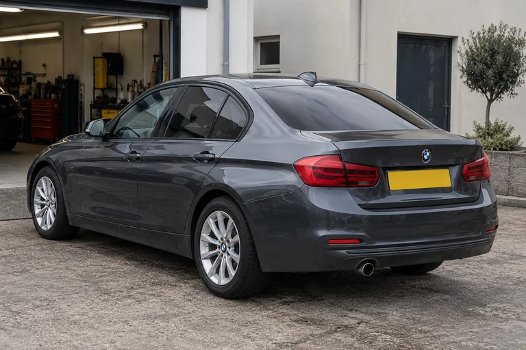
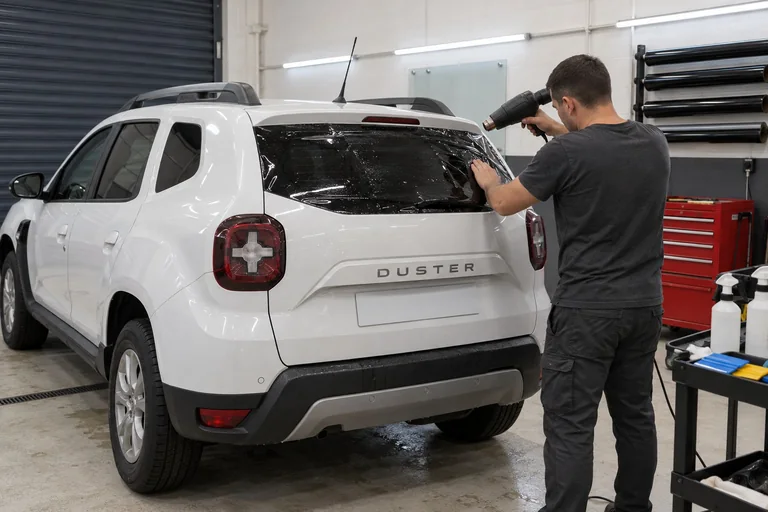
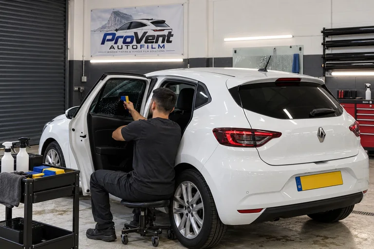
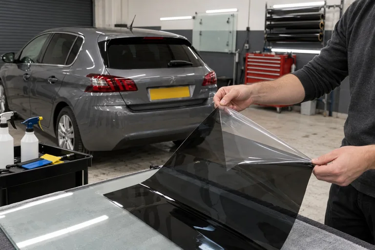
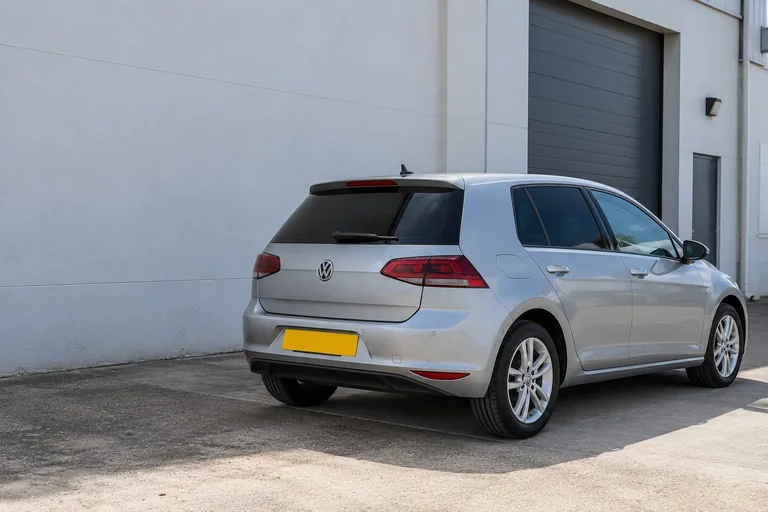
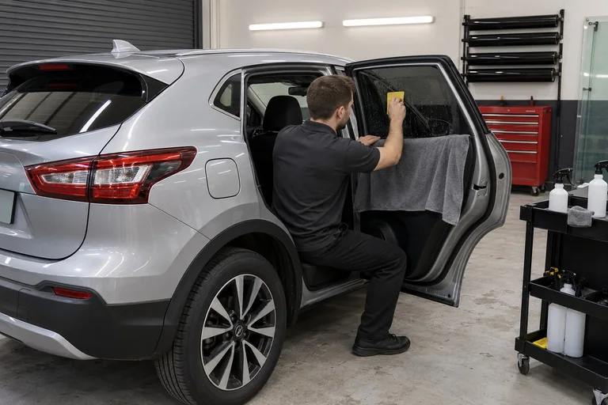
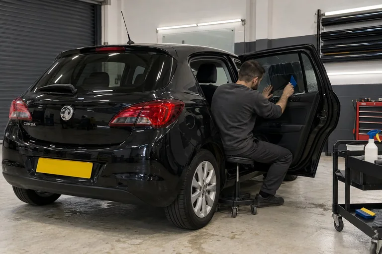
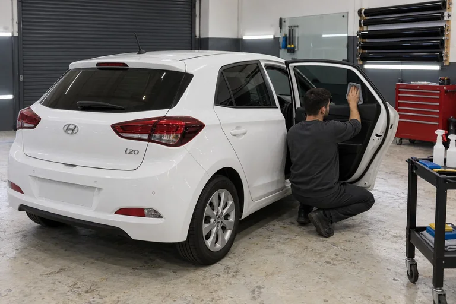
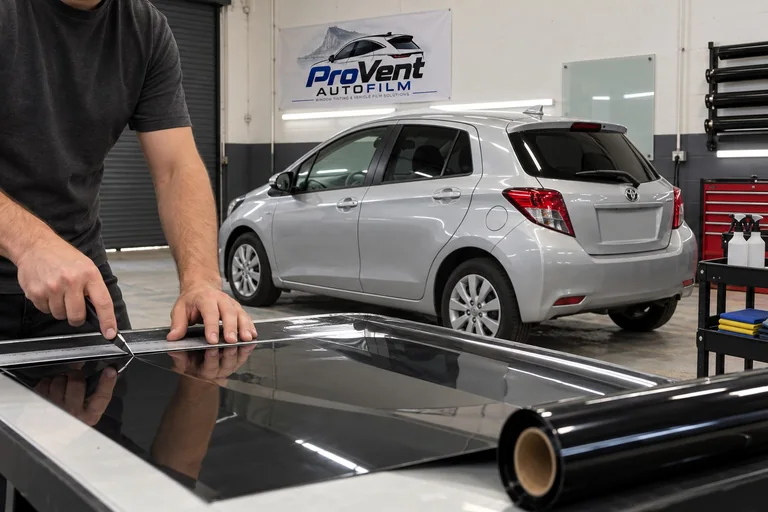
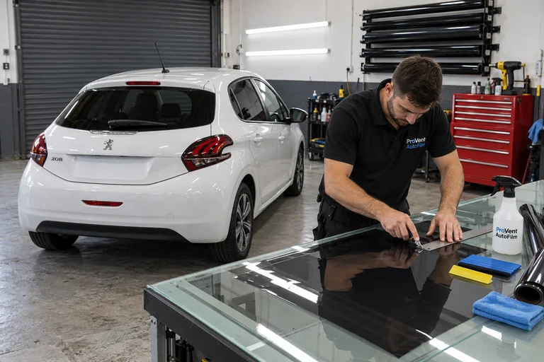
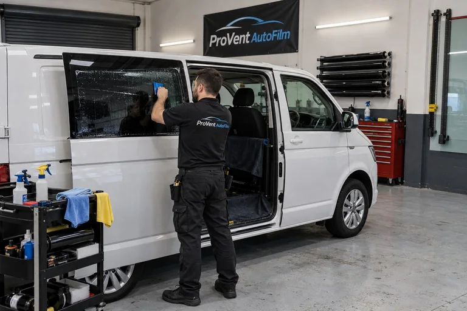
Have something similar in mind?
Get a quote for your vehicleAbout ProVent AutoFilm
ProVent AutoFilm specialises in automotive window tinting in Gibraltar. Our approach is straightforward: understand what you want, discuss suitable options and give your vehicle the care it deserves.
From the first enquiry to the finished installation, we focus on clear communication and workmanship. Get in touch to discuss your vehicle and arrange the next step.
Talk to us about your vehicleGetting started
Your name, vehicle make and model, the windows you want tinted and a photo where possible.
We’ll discuss the job, your preferred finish and the quotation before you book.
Confirm an appointment and receive the aftercare advice for your installation.
Send us your name, vehicle make and model, and which windows you would like tinted. A vehicle photograph helps us understand the job. You can send all of this directly on WhatsApp.
Tell us the appearance and level of privacy you want. We will discuss suitable options for your vehicle and the windows involved before you book.
Shade describes the appearance of the glass. Heat, glare and UV performance depend on the particular film and its specifications. Ask us about the available film options for your vehicle.
Privacy depends on the film shade and the lighting inside and outside the vehicle. Window tint does not guarantee complete privacy in every condition.
Factory privacy glass and applied window film are different. Let us know if your vehicle already has dark glass so we can discuss what you want to achieve.
Follow the aftercare instructions provided for your installation. Drying time depends on the film and conditions, so confirm when it is safe to lower the windows before you leave.
Use a soft, clean cloth and a cleaner suitable for the installed film. Avoid abrasive tools. We will explain the care instructions for your chosen film.
Timing depends on the vehicle, the number of windows and whether existing film needs attention. We will confirm the expected time when arranging the work.
Request a quotation
Send us your name, make and model, and the windows you would like tinted. Add a vehicle photo in WhatsApp where possible.
Open WhatsAppFill in these details to start your WhatsApp message.
You can attach a vehicle photo after WhatsApp opens. Review the message and press send there. This website does not upload photos or store your enquiry.